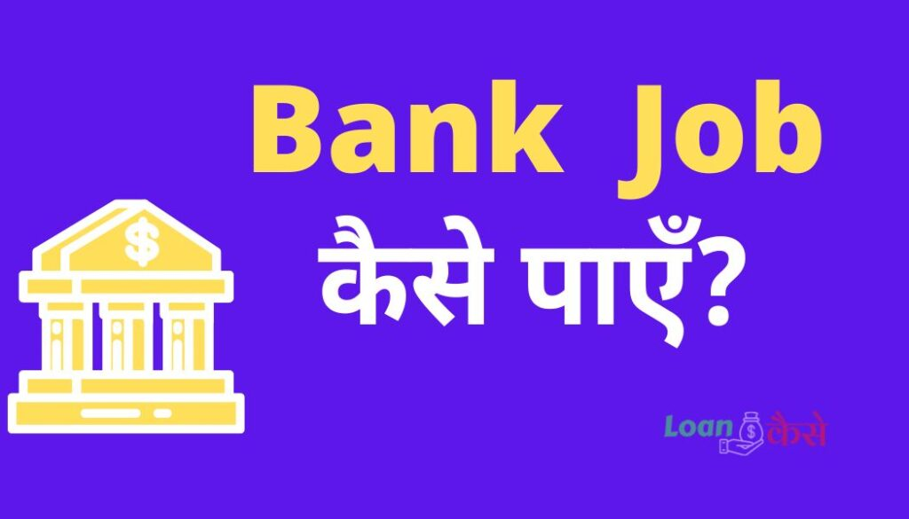

Bank me Job Kaise Paye:-दोस्तों अगर आप भी बैंक में जॉब करना चाह रहे हैं और आपको नहीं पता है की बैंक में जॉब कैसे करना है।तो आप बिल्कुल सही जगह आए हैं,इस पोस्ट के माध्यम से हम आपको बताएंगे कि बैंक में जॉब कैसे मिलता है।बैंक में जॉब पाने के लिए किस तरह से पढ़ाई करनी होती है,बैंक जॉब का Syllabus क्या है बैंक में जॉब करने के लिए परीक्षा की तैयारी कैसे की जाती है इस तरह के सारे सवाल अगर आपके भी मन में हैं तो Please इस पोस्ट को पूरा पढ़िए तभी आपको पता चल पाएगा कि बैंक में जॉब कैसे पाएं।(Bank Me Job Kaise Paye)
दोस्तों आइए सबसे पहले जान लेते हैं कि हमारे भारत में किस तरह के सामान्य तौर पर बैंक पाए जाते हैं उसके बाद ही आप निर्णय ले पाएंगे कि आपको किस तरह के बैंक में जॉब लेना है।
- प्राइवेट सेक्टर बैंक :-इसमें एचडीएफसी बैंक, आईसीआईसीआई बैंक, फेडरल बैंक, आईडीबीआई बैंक ,कोटक महिंद्रा बैंक, आरबीएल बैंक इत्यादि मिलाकर कुल 22 बैंक आते हैं।
- पब्लिक सेक्टर बैंक या सरकारी बैंक:-इनमें भारत के सरकारी बैंक जैसे:- स्टेट बैंक ऑफ इंडिया, बैंक ऑफ बड़ौदा, पंजाब नेशनल बैंक, सेंट्रल बैंक, यूनियन बैंक ऑफ इंडिया, इंडियन ओवरसीज बैंक इत्यादि कुल मिलाकर 12 बैंक आते हैं।
- क्षेत्रीय ग्रामीण बैंक(Regional Rural Banks):-इस तरह के बैंक किसी विशेष राज्य के विशेष क्षेत्र के लिए होते हैं इनके शाखाएं हैं पूरे भारत में नहीं होते हैं जैसे कि उत्तर बिहार ग्रामीण बैंक, बरोदा राजस्थान क्षेत्रीय ग्रामीण बैंक, दक्षिण बिहार ग्रामीण बैंक इत्यादि कुल 43 बैंक हैं , इस प्रकार के बैंक ग्रामीण क्षेत्रों में पाए जाते हैं।
Bank में Job Karne के लिए कौन कौन से पद है?(Career Scope In Banking jobs)
दोस्तों बैंक में जॉब करने से पहले आपको यह तय करना होगा कि आप किस तरह का जॉब करना चाह रहे हैं किसी भी बैंक में सामान्य तौर पर मुख्य रूप से जो पद और उनके कार्य क्या होते हैं वह इस प्रकार है:-
- प्रोबेशनरी ऑफिसर (Probationary Officer) या Bank Po:-आज के समय में बैंक में सबसे पॉपुलर जॉब यही है इस पद पर रहकर आपको बैंकिंग के लगभग सभी कार्य करना होता है।
- क्लर्क(Cleark):-बैंक कलर का कार्य नए ग्राहकों से बातचीत करना उनके खाता खोलने के लिए डॉक्यूमेंट इकट्ठा करना, फाइल तैयार करना, केवाईसी करवाना है इस तरह के कार्य होते हैं।
- स्पेशलिस्ट ऑफिसर(Specielist officers)(जैसे- लीगल ऑफिसर, आईटी ऑफीसर):- स्पेशलिस्ट ऑफीसर बैंक में किसी स्पेशल कार्य के लिए नियुक्त किए जाते हैं जैसे कोई कानूनी कार्य के लिए लीगल ऑफिसर, ऑनलाइन बैंकिंग के लिए आईटी ऑफीसर इत्यादि नियुक्त किए जाते हैं।
{kind=link}

ये भी पढ़े (Also Read):-
- Axis Bank Consolidated Charge क्या है?
- Bank से Loan लेने के लिए कैसे बात करें?
- BRKGB Internet Banking,पूरी जानकारी हिंदी में।
- Loan margin money क्या होता है?
- Lien Amount क्या है? (Lien amount meaning In Hindi)
- PostOffice se Loan kaise Milta hai?
पब्लिक सेक्टर बैंक या सरकारी बैंक मे जॉब कैसे पाए हैं?(Government bank me Job Kaise Paye)
दोस्तों सबसे पहले हम आपको बताते हैं कि आप गवर्नमेंट बैंक या जिसे हम पब्लिक सेक्टर बैंक जैसे:- स्टेट बैंक ऑफ इंडिया, पंजाब नेशनल बैंक इन बैंकों में आप जॉब कैसे पा सकते हैं:-
शैक्षणिक योग्यता क्या होनी चाहिए?(Educational Qualification For Job In Government Bank)
- गवर्नमेंट बैंक में जॉब करने के लिए कम से कम किसी भी विषय में राज्य सरकार या केंद्र सरकार द्वारा मान्यता प्राप्त यूनिवर्सिटी से कम से कम 60% अंक के साथ स्नातक उत्तीर्ण होना चाहिए तभी जाकर आप बैंक में जॉब हेतु आवेदन करने के लिए योग्य होंगे।
- कंप्यूटर का जानकारी भी होना चाहिए।
उम्र सीमा(Age Limit For Bank Job):-
बैंक में जॉब करने के लिए कम से कम 20 वर्ष और अधिकतम 30 वर्ष उम्र होना चाहिए, अधिकतम उम्र सीमा में 3 वर्ष से लेकर 5 वर्ष तक का कैटेगरी के हिसाब से छूट भी दिया जाता है।
सरकारी बैंकों में जॉब के लिए चयन का प्रक्रिया (Selection Process for Job In Government Job):-
स्टेट बैंक ऑफ इंडिया के अलावे बाकी सभी सरकारी बैंक एवं क्षेत्रीय ग्रामीण बैंक में भर्ती के लिए IBPS(Institute Of Banking Persnol Selection) नामक संस्था के द्वारा चयन का प्रक्रिया किया जाता है।जबकि स्टेट बैंक ऑफ इंडिया अपने कर्मचारियों का चयन IBPS की तरह खुद से करती है।
IBPS के द्वारा PO,SO,CLEARK,RRB पदों के चयन के लिए प्रत्येक वर्ष विज्ञापन के माध्यम से परीक्षा का आयोजन किया जाता है, और सफल अभ्यर्थियों को उनके मेरिट के अनुसार चयनित पदों पर बैंकों में नियुक्त किया जाता है।
IBPS PO,SO,CLEARK,RRB Selection Process in Hindi:-
दोस्तों Bank Po, क्लर्क आदि पदों का चयन दो परीक्षाएं और एक Interview कुल तीन चरणों में होता है जो निमनलिखित है:-
- CRP – ONLINE EXAMINATIONS -100 Marks,Time-60 Minutes (Subject-English Language -30 Marks,Numerical Ability-35 Marks,Reasoning Ability-35 Marks )
- Main Examination-200 Marks,Time-190 Minute,(Subject-General/ Financial Awareness-50 Marks,General English-40Marks,Reasoning Ability & Computer Aptitude-60Marks,Quantitative Aptitude -50 Marks)
- Interview:- CRP और Main Examination मैं सफल हुए अभ्यर्थियों को बारी बारी से बैंकों के द्वारा इंटरव्यू के लिए बुलाया जाता है इंटरव्यू में सफल हो जाने के बाद उन्हें बैंक में जॉब मिल जाती है।
Bank Me Job Karne Ke Liye Konsa Course Kare?
दोस्तों अगर आप Bank PO,क्लर्क आदि की तैयारी करना चाहते हैं तो आप इसके लिए कोई ऐसा कोर्स ज्वाइन करें जिसमें सामान्य अध्ययन, अंग्रेजी, कंप्यूटर एप्टिट्यूड, रिजनिंग, गणित ,वाणिज्य विषय पढ़ाया जाता हो या चाहे तो आप इन विषयों का एक एक करके भी अलग-अलग पढ़ाई करके बैंक परीक्षा की तैयारी कर सकते हैं।
बैंक में जॉब करने के लिए तैयारी कैसे करें ?
अगर आप मन बना लिया है कि आपको बैंक में ही जॉब करना है तो इसके लिए आपको काफी ज्यादा मेहनत करने की आवश्यकता पड़ सकती है तो आइए जानते हैं कि आप किस तरह से बैंक में जॉब करने के लिए तैयारी कर सकते हैं:-
- आपको सबसे पहले गणित(Mathematics) और रिजनिंग(Reasoning) विषय को ज्यादा से ज्यादा अध्ययन करने की आवश्यकता पड़ेगी इसके लिए आप प्रैक्टिस सेट का सहारा ले सकते हैं।
- इंग्लिश ग्रामर (English grammar)और जनरल इंग्लिश(General English) पर भी आपको ध्यान देने की आवश्यकता होगी।
- अगर आप कंप्यूटर के बारे में कुछ भी नहीं जानते तो आपको कंप्यूटर क्लास भी ज्वाइन करना पड़ सकता है।
- लाभ हानि प्रतिशत घाटा फायदा इस तरह के प्रश्नों का भी आपको ज्यादा से ज्यादा प्रैक्टिस करने की आवश्यकता पड़ेगी।
- चुकी आप बैंक में जॉब करने के लिए exam देने जा रहे हैं इसीलिए आपको financial प्रश्नों की भी तैयारी करने की आवश्यकता होगी।
Private Bank Me Job Kaise Paye:-
दोस्तों अगर आपको सरकारी बैंकों में जॉब नहीं मिल पा रहा है और अगर आप बैंक में ही जॉब करना चाह रहे हैं तो आपके लिए प्राइवेट सेक्टर बैंक में जॉब करना आपके लिए थोड़ा सा आसान हो सकता है, क्योंकि प्राइवेट सेक्टर बैंकों में आईबीपीएस जैसे मुश्किल परीक्षाएं नहीं होती हैं।
प्राइवेट बैंक जैसे- एचडीएफसी बैंक, आईसीआईसीआई बैंक, एक्सिस बैंक इन बैंकों में आप को जॉब करने के लिए उन बैंकों के ऑफिशियल वेबसाइट पर जाकर आपको ऑनलाइन एप्लीकेशन देना होगा या अपना बायोडाटा बना कर ऑफलाइन नजदीकी किसी बैंक में जाकर जॉब के लिए अप्लाई करना होगा।
उसके बाद आपको इंटरव्यू के लिए बुलाया जाएगा बैंक के ही नोडल ऑफिसर के द्वारा आपका इंटरव्यू लिया जाएगा इंटरव्यू में सफल हो जाने के बाद आपका चयन उस बैंक में हो जाएगा और आप प्राइवेट बैंक में आसानी से जॉब कर पाएंगे।
बैंक मैनेजर कैसे बने?(Bank Manager Banane Ke Liye Kya Padhe)
किसी भी बैंक में बैंक मैनेजर के पद पर सीधी भर्ती नहीं की जाती है क्योंकि किसी भी बैंक की पूरी की पूरी जवाबदेही बैंक मैनेजर के ऊपर ही होती है किसी बैंक को सुचारू रूप से चलाने के लिए बैंक मैनेजर पूरी तरह से जिम्मेदार होता है इसीलिए बैंक मैनेजर के पद पर सीधी भर्ती नहीं होती है, बैंक मैनेजर के लिए पहले से बैंक में कार्य कर रहे हैं Provisionary officer जिसे हम BANK PO कहते हैं, को उनके अच्छे कार्यों के बदले प्रमोशन देकर बैंक मैनेजर बनाया जाता है।
तो अगर आप बैंक मैनेजर बनना चाहते हैं तो आपको बैंक पीओ बनने की आवश्यकता है बैंक पीओ के पद पर कुछ वर्षों तक अच्छी तरह से कार्य करने के बाद बैंक को जब लगेगा कि आप बैंक मैनेजर के लायक हैं तब आपको बैंक मैनेजर के पद पर प्रमोट कर दिया जाएगा।
10 Pass Job In Bank :-
बैंक में जॉब करने के लिए कम से कम किसी भी विषय से स्नातक का डिग्री होना अनिवार्य है लेकिन अगर आप दसवीं पास करके बैंक में जॉब करना चाहते हैं तो आप केवल प्राइवेट बैंक में ही लोन सुपरवाइजर या डाकिया आदि जैसे छोटे-छोटे पदों पर जॉब कर सकते हैं।
Private Bank Jobs Whatsapp Group Link
अगर आप प्राइवेट बैंक में जॉब करना चाहते हैं तो इसके तैयारी के लिए आप कुछ व्हाट्सएप ग्रुप लिंक भी ज्वाइन कर सकते हैं जिसका लिंक आपको नीचे दिया गया है,इस तरह के प्राइवेट बैंक जॉब व्हाट्सएप ग्रुप में जुड़कर आप बैंक जॉब से संबंधित सूचनाओं से हमेशा अवगत रहेंगे और आपको बैंक में जॉब करने में आसानी होगी।
- Whatsapp Group Bank of mhrashtra – Join
- Up State Bank Job Whatsapp Group– Join
- SBI (State Bank Of India) Bank Jobs – Join
- Whatsapp Group Link ICICI Bank jobs – Join
- IBPS (Institute of Banking Personal)– Join
- Whatsapp Group link BPO Jobs related – Join
- Latest Banks Job Notification Whatsapp Group – Join
Frequently Asked Question In Banking Jobs:-
12th Ke Baad Bank Me Job Kaise Kare?
12th पास करने के बाद आप सरकारी बैंक में तो जॉब नहीं कर सकते हैं लेकिन प्राइवेट बैंक में फील्ड ऑफिसर के रूप में कार्य कर सकते हैं इसके लिए आपको एक बायोडाटा बनाकर किसी भी प्राइवेट बैंक में संपर्क करना होगा।
9th Pass Banking Jobs ?
अगर आप 9th पास कर चुके हैं तो आप बैंक में वैसे तो कोई भी काम नहीं कर सकते हैं लेकिन कम से कम ट्वेल्थ पास कर लेंगे तो आप कम से कम फील्ड ऑफिसर के रूप प्राइवेट बैंकों में में काम कर पाएंगे।
Bank Me Clerk Ka Kya Kaam Hota Hai?
बैंक में क्लर्क का काम कस्टमर का केवाईसी(KYC) करना,डॉक्यूमेंट को फाइल में सजा कर रखना इस तरह के छोटे-मोटे कार्य बैंक क्लर्क का होता है।
Bank में salary कितनी मिलती है?
बैंक कर्मी को उनके पद के हिसाब से Pay ग्रेड मिलता है और इसी से सैलरी का निर्धारण होता है।
Conclusion (निस्कर्ष):-
दोस्तों आज हमने आपको बताया और आपने पढ़ा कि Bank me job kaise paye,बैंक में जॉब पाने के क्या तरीक़े होते हैं किस तरह से आपको बैंक के Exam का तैयारी करना होता है,बैंक जॉब के परीक्षा किस तरह के होते हैं,मुझे उम्मीद है की आपको ये पोस्ट पढ़कर काफ़ी बढ़ियाँ लगा होगा,किसी तरह के सुझाव के लिए निचे कॉमेंट करे हम आपको रिप्लाई ज़रूर करेंगे धन्यवाद।